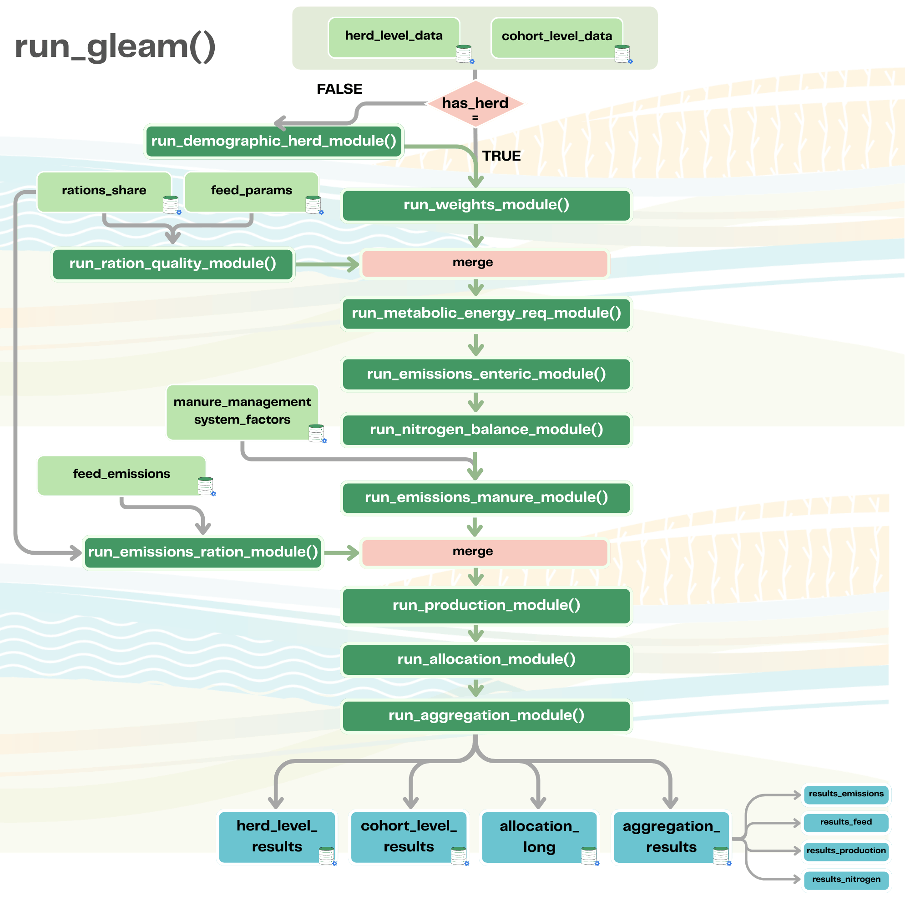
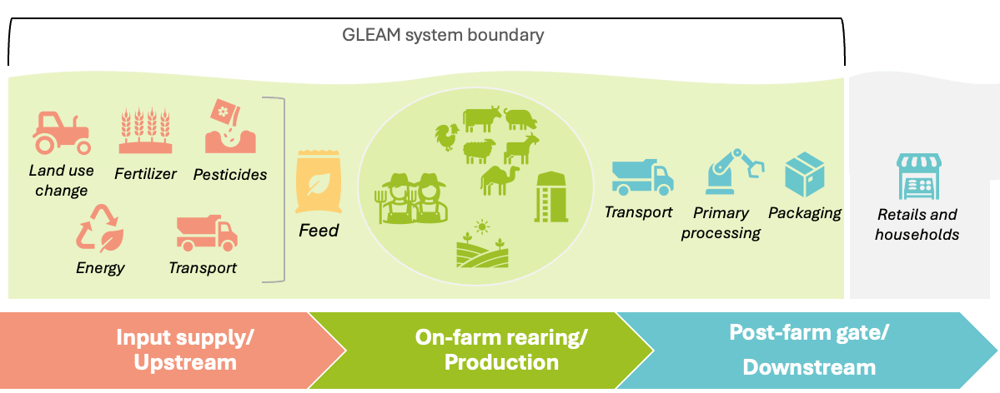

Introduction
The gleam R package implements the core computational
engine of the Global Livestock Environmental Assessment Model (GLEAM),
developed by the Food and Agriculture Organization of the United Nations
(FAO). It provides a modular, transparent, and reproducible framework
for quantifying greenhouse gas (GHG) emissions from livestock supply
chains using a Life Cycle Assessment (LCA) approach based on the IPCC
Tier 2 methodology.
The package covers seven livestock species: cattle (CTL), buffalo (BFL), camels (CML), sheep (SHP), goats (GTS), pigs (PGS), and chickens (CHK). It estimates emissions from enteric fermentation, manure management, and feed production, and allocates them to livestock commodities (meat, milk, fibre, and work) using a biophysical energy-based allocation framework consistent with ISO 14044, LEAP guidelines and the IDF Global Carbon Footprint Standard.
The package is part of the broader GLEAM ecosystem, which includes interactive web applications, dashboards, data infrastructure, and capacity-building tools. This vignette provides an overview of the R package specifically; a brief description of the wider ecosystem is given in The GLEAM Ecosystem.
Species currently covered in GLEAM
Installation
Install the package from the FAO GitHub repository:
# Install devtools if not already available
install.packages("devtools")
# Install the gleam package from GitHub
devtools::install_git("https://github.com/un-fao/GLEAM.git")The package depends on data.table for all data
manipulation. All input and output datasets are data.table
objects throughout the pipeline.
Key Concepts
Species codes
Every function in the package identifies livestock species using
standardized short codes that appear as species_short in
the data:
| Code | Species |
|---|---|
| CTL | Cattle |
| BFL | Buffalo |
| SHP | Sheep |
| GTS | Goats |
| CML | Camels |
| PGS | Pigs |
| CHK | Chickens |
Sex–age cohort codes
Within each herd, animals are classified into six sex–age cohorts that define their production stage:
| Code | Sex | Age class | Life stage definition |
|---|---|---|---|
| FJ | Female | Juvenile | From birth to weaning |
| FS | Female | Sub-adult | From weaning to first parturition |
| FA | Female | Adult | From first parturition onwards |
| MJ | Male | Juvenile | From birth to weaning |
| MS | Male | Sub-adult | From weaning to first breeding |
| MA | Male | Adult | From first breeding onwards |
These cohort codes appear in the cohort_short column of
all cohort-level data tables and are required by nearly every function
in the package.
Cohort-level population data
If the cohort distribution is not supplied by the user, the GLEAM demographic herd module generates population numbers for each cohort based on the herd-level parameters and total population size.
Assessment period
The assessment period (cohort_short) defines the time
window over which emissions and production are computed. It is specified
in days (typically 365 for a standard annual assessment). Per-head,
per-day intermediate values are scaled to cohort totals over the
assessment period in the aggregation step. The assessment period can
also be used to represent different seasons with distinct variations in
input data (e.g., feed basket composition or nutritional quality).
Quick Start
The following example loads the sample data shipped with the package and runs the full pipeline:
library(gleam)
library(data.table)
# ---- Load sample data from inst/extdata ----
path <- system.file("extdata/run_gleam_examples", package = "gleam")
cohort_dt <- fread(file.path(path, "master_chrt_lvl_no_structure_data.csv"))
herd_dt <- fread(file.path(path, "master_hrd_lvl_data.csv"))
rations_dt <- fread(file.path(path, "feed_rations_share_chrt.csv"))
feed_params_dt <- fread(file.path(path, "feed_quality.csv"))
feed_emis_dt <- fread(file.path(path, "feed_emission_factors.csv"))
mms_frac_dt <- fread(file.path(path, "manure_management_system_fraction.csv"))
mms_fact_dt <- fread(file.path(path, "manure_management_system_factors.csv"))
# ---- Run the full GLEAM pipeline ----
results <- run_gleam(
has_herd_structure = FALSE,
cohort_level_data = cohort_dt,
herd_level_data = herd_dt,
feed_rations = rations_dt,
feed_params = feed_params_dt,
feed_emissions = feed_emis_dt,
manure_management_system_fraction = mms_frac_dt,
manure_management_system_factors = mms_fact_dt,
simulation_duration = 365,
global_warming_potential_set = "AR6"
)
# ---- Inspect results ----
print(results$cohort_level_results)
print(results$allocation_long)
print(results$aggregation_results$results_emissions)If you already have a pre-computed herd structure (population sizes
and offtake numbers), set has_herd_structure = TRUE and
supply a cohort-level table that includes the
cohort_stock_size and offtake_heads_assessment
columns. The pipeline will skip the herd simulation step and proceed
directly to the weight calculations.
Pipeline Overview
The run_gleam() function orchestrates the full modelling
pipeline by calling individual modules in sequence. Each module can also
be run independently for custom workflows. The pipeline consists of the
following steps:
| # | Module | Function | Key outputs |
|---|---|---|---|
| 1 | Herd simulation (optional) | run_demographic_herd_module() |
Cohort sizes, offtake numbers, herd growth rate |
| 2 | Cohort weights | run_weights_module() |
Initial, average, and final live weights; daily weight gain |
| 3 | Ration nutritional content | run_ration_quality_module() |
Diet gross energy, digestibility, nitrogen, ash |
| 4 | Metabolic energy requirements and ration intake | run_metabolic_energy_req_module() |
Energy partitions (maintenance, growth, lactation, etc.); dry matter intake |
| 5 | Enteric emissions | run_emissions_enteric_module() |
Enteric CH₄ emissions |
| 6 | Nitrogen balance | run_nitrogen_balance_module() |
Nitrogen intake, retention, and excretion |
| 7 | Manure emissions | run_emissions_manure_module() |
CH₄ and N₂O from manure management |
| 8 | Feed production emissions | run_emissions_ration_module() |
GHG from feed production |
| 9 | Production outputs | run_production_module() |
Production of milk, meat, and fibre |
| 10 | Emission allocation | run_allocation_module() |
Biophysical allocation shares and allocated emissions per commodity |
| 11 | Aggregation and reporting | run_aggregation_module() |
Herd-level aggregation of emissions and conversion to CO₂eq |
Each module validates its inputs before execution, checking for
required columns, valid value ranges, and consistency across data
tables. This ensures that errors are caught early and do not propagate
silently through the pipeline. A three-tier structure is implemented
consistently throughout. Every public function calls its validator
before any computation. Constants are centralized in
gleam_constants.R.
run_*_module() # orchestrator: validates, calls core functions, assembles output
└─ core_model_*.R # scientific functions: one exported function per quantity
└─ validate_*.R # input guards: called first in every functionOverview of the GLEAM pipeline wih the different modules:

Running individual modules
For custom workflows, research applications, or step-by-step debugging, each module can be called independently. For example, to compute only metabolic energy requirements:
# Assumes cohort_level_data and herd_level_data have been prepared with
# weight and ration quality variables already merged in.
energy_results <- run_metabolic_energy_req_module(
cohort_level_data = my_cohort_data,
herd_level_data = my_herd_data
)An overview of all modules, their inputs and outputs is provided in the Module Overview vignette.
Using individual scientific functions
At the lowest level, all core computations are exposed as individual scientific functions. These can be called directly for research or testing purposes. For example, to compute maintenance energy requirements for a single cohort:
e_maint <- calc_metabolic_energy_req_maintenance(
species_short = "CTL",
cohort_short = "FA",
live_weight_cohort_average = 450,
lactating_females_fraction = 0.7,
offtake_rate = 0.15,
age_first_parturition = 1095
)Input Data
The run_gleam() pipeline requires several input data
tables. Sample files for all tables are provided in
inst/extdata/run_gleam_examples/ and can be loaded with
data.table::fread() as shown in the Quick Start example.
cohort_level_data
A data.table with one row per herd × cohort (six rows
per herd).
| Column | Type | Description |
|---|---|---|
herd_id |
Character | Unique herd identifier, repeated for each cohort |
species_short |
Character | Livestock species code (see species codes) |
cohort_short |
Character | Sex–age cohort code (see cohort codes) |
cohort_duration_days |
Numeric | Time each animal spends in the cohort (days) |
offtake_rate |
Numeric | Annual proportion of animals removed from the herd per cohort (fraction) |
death_rate |
Numeric | Annual death fraction per cohort (fraction); required when
has_herd_structure = FALSE
|
low_activity_fraction |
Numeric | Proportion of the assessment period with low-intensity movement (fraction) |
high_activity_fraction |
Numeric | Proportion of the assessment period with sustained locomotion (fraction) |
Additional columns are required when
has_herd_structure = TRUE (cohort_stock_size,
offtake_heads_assessment). See ?run_gleam for
the complete column specification.
herd_level_data
A data.table with one row per herd.
Key columns include live weights (adult female/male, birth, weaning,
slaughter), reproductive parameters (parturition rate, litter size,
pregnancy duration), production parameters (milk yield, milk
composition, fibre yield), draught work parameters, and
slaughter/dressing parameters. See ?run_gleam for the full
list.
feed_rations
A data.table with one row per herd × cohort × feed
component.
| Column | Type | Description |
|---|---|---|
herd_id |
Character | Unique herd identifier |
cohort_short |
Character | Cohort code |
feed_id |
Character | Unique feed component identifier |
feed_ration_fraction |
Numeric | Share of this feed in the total ration dry matter (fraction); must sum to 1 per herd × cohort |
feed_params
A data.table with one row per feed component, providing
nutritional parameters: gross energy, digestible energy (ruminants and
pigs), metabolizable energy (ruminants, pigs, chickens), nitrogen
content, urinary energy fraction, and ash content. Joined to
feed_rations by feed_id.
feed_emissions
A data.table with one row per feed component, providing
emission factors (g gas/kg DM) for CO₂ from fertilizer manufacture,
pesticide manufacture, on-field crop activities, and land-use change
(peat and non-peat); N₂O from fertilizer use, manure applied to soil,
and crop residues; and CH₄ from rice cultivation.
manure_management_system_fraction
A data.table with one row per herd × cohort × manure
management system (MMS), specifying the fraction of total manure handled
by each system. The names mms_pasture and
mms_burned are reserved for manure deposited on pasture and
burned for fuel, respectively. Fractions must sum to 1 per herd ×
cohort.
Output Structure
run_gleam() returns a named list with four elements:
cohort_level_results: A cohort-leveldata.tablecontaining all original input columns plus every variable computed across the pipeline, expressed as per-head, per-day quantities. Calculated variables include cohort stock sizes and offtake numbers, live weights, ration quality metrics, energy requirements, dry matter intake, enteric CH₄, nitrogen balance, volatile solids, manure CH₄ and N₂O (by MMS group), feed production emission factors, production outputs (milk, meat, fibre), and allocation energies.herd_level_results: A herd-leveldata.tablecontaining the herd-level input parameters plus, whenhas_herd_structure = FALSE, the annualized herd growth rate (growth_rate_herd).allocation_long: A herd-leveldata.tablein long format with one row per herd × commodity × emission source, containing the biophysical allocation shares used to distribute herd-level emissions to commodities (Milk, Meat, Fibre, Work, Eggs, None).-
aggregation_results: A named list with fourdata.tableelements:-
results_emissions: herd-level GHG emissions scaled to the assessment period and expressed in kg gas and kg CO₂eq; -
results_feed: herd-level feed intake; -
results_production: herd-level production of milk, meat, and fibre; -
results_nitrogen: herd-level nitrogen balance.
-
Key output units
| Category | Units |
|---|---|
| Energy requirements | MJ/head/day |
| Dry matter intake | kg DM/head/day |
| Nitrogen balance | kg N/head/day |
| Enteric CH₄ | kg CH₄/head/day |
| Manure emissions | kg gas/head/day |
| Feed emission factors | g gas/kg DM |
| Production | kg/cohort/assessment period |
| Aggregated emissions | kg gas/herd/assessment period and kg CO₂eq |
Methodological Background
LCA approach and system boundary

Livestock agrifood systems and the GLEAM system boundary
GLEAM applies a cradle-to-processing-point Life Cycle Assessment (LCA) framework. The system boundary encompasses:
- Upstream processes: feed crop and pasture production, fertilizer and input production, and feed processing.
- On-farm processes: animal husbandry, enteric fermentation, manure management, and on-farm energy use.
- Downstream processes: primary processing, storage, and transport of livestock products.
Note: The current R package implements the on-farm emission modules (metabolic energy requirements, enteric emissions, manure management emissions, production outputs, and biophysical allocation). Feed production emissions are computed using emission factors per feed component. Downstream processing modules are under development.
IPCC Tier 2 energy partitioning
The package implements the IPCC Tier 2 methodology for estimating GHG emissions from livestock. Energy requirements are partitioned into maintenance, activity, growth, lactation, pregnancy, work, and fibre production components using species-specific equations from the IPCC 2006 Guidelines and the 2019 Refinement. Total daily energy requirements are then used to estimate dry matter intake, volatile solids excretion, and enteric methane emissions.
Energy requirements for CTL, BFL, SHP, and GTS are expressed as net energy (NE); for CML, PGS, and CHK they are expressed as metabolizable energy (ME).
Biophysical allocation
Environmental burdens are allocated to livestock co-products (meat, milk, fibre, and work) using a biophysical approach based on the energy required to produce each commodity. This follows the IDF Global Carbon Footprint Standard (IDF, 2022) and is consistent with ISO 14044:2006 (Section 4.3.4.2, Step 2).
Emissions from manure deposited on pasture and manure burned as fuel are assigned to the residual category “Other” (not allocated to any commodity), in line with LCA cut-off rules and to avoid double-counting with upstream feed production.
Global warming potentials
CO₂-equivalent emissions are computed using GWP-100 factors from the
selected IPCC Assessment Report. The
global_warming_potential_set argument accepts:
| Value | Report | CH₄ | N₂O |
|---|---|---|---|
"AR6" |
IPCC 6th Assessment (2021) | 27 | 273 |
"AR5_excluding_carbon_feedback" |
IPCC 5th Assessment, excl. feedbacks (2013) | 28 | 265 |
"AR5_including_carbon_feedback" |
IPCC 5th Assessment, incl. feedbacks (2013) | 34 | 298 |
"AR4" |
IPCC 4th Assessment (2007) | 25 | 298 |
Further Resources
Package documentation
-
Function reference: Full documentation for all
exported functions is available via
?function_name(e.g.,?run_gleam) or the online reference manual. -
Sample data: Example datasets for all input tables
are in
inst/extdata/run_gleam_examples/.
Methodological references
IPCC. (2019).
2019 Refinement to the 2006 IPCC Guidelines for National Greenhouse Gas Inventories.
Volume 4, Chapter 10: Emissions from Livestock and Manure Management.
https://www.ipcc-nggip.iges.or.jp/public/2019rf/index.htmlIPCC. (2006).
2006 IPCC Guidelines for National Greenhouse Gas Inventories.
Volume 4, Chapter 10: Emissions from Livestock and Manure Management.
https://www.ipcc-nggip.iges.or.jp/public/2006gl/index.htmlIDF. (2022).
The IDF Global Carbon Footprint Standard for the Dairy Sector.
Bulletin of the IDF No. 520/2022.
https://shop.fil-idf.org/products/the-idf-global-carbon-footprint-standard-for-the-dairy-sectorFAO LEAP.
Guidelines for livestock supply chains (large ruminants, small ruminants, poultry, pigs, feed).
https://www.fao.org/partnerships/leap/en
GLEAM publications
Gerber, P.J., Steinfeld, H., Henderson, B., Mottet, A., Opio, C., Dijkman, J., Falcucci, A., & Tempio, G. (2013).
Tackling climate change through livestock: A global assessment of emissions and mitigation opportunities.
FAO, Rome.
https://www.fao.org/4/i3437e/i3437e04.pdfFAO. (2023).
Pathways towards lower emissions — A global assessment of the greenhouse gas emissions and mitigation options from livestock agrifood systems.
FAO, Rome.
DOI: https://doi.org/10.4060/cc9029enWisser, D., Grogan, D.S., Lanzoni, L., Tempio, G., Cinardi, G., Prusevich, A., & Glidden, S. (2024).
Water Use in Livestock Agri-Food Systems and Its Contribution to Local Water Scarcity: A Spatially Distributed Global Analysis. Water, 16(12), 1681.
https://doi.org/10.3390/w16121681
Resource partner
The development of the GLEAM ecosystem was supported by the German Federal Ministry of Food, Agriculture, and Regional Identity BMELH
bmleh logo